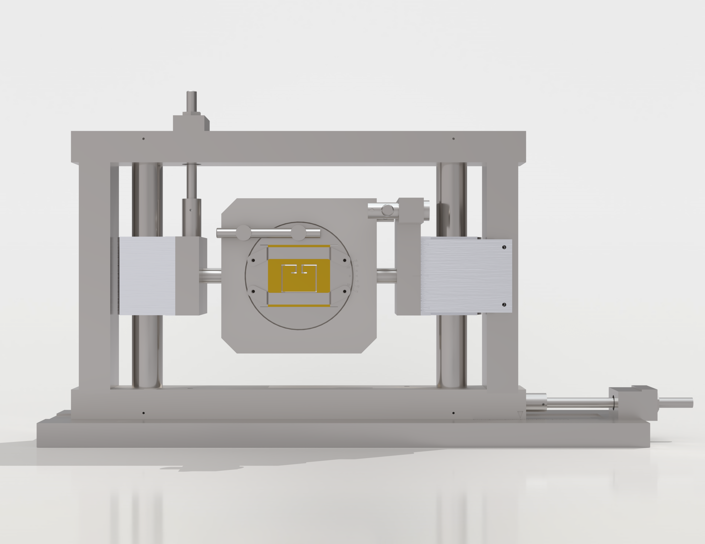
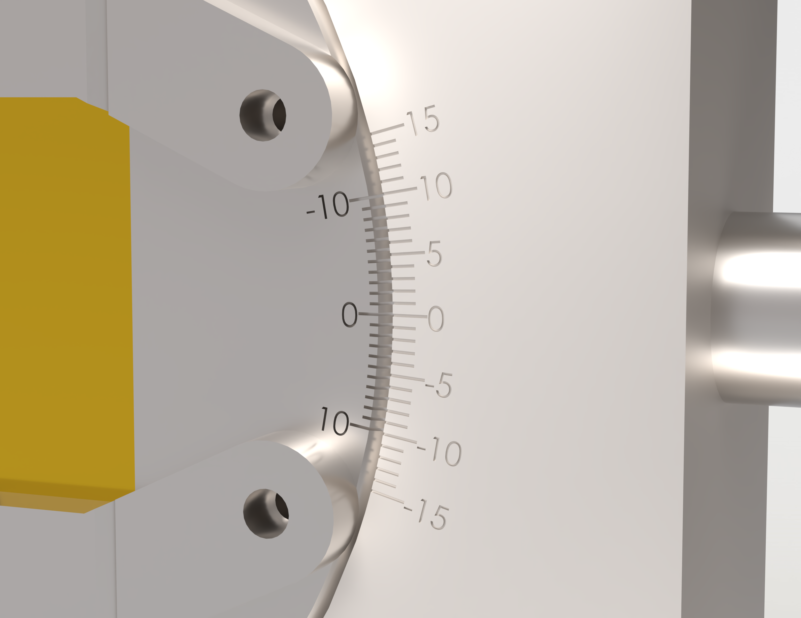

Modineer · 2024 · Tooling design
Roll Form Straightener Block Holder
A four-axis adjustable holder for the straightener block on a roll forming line, with every adjustment read off a scale instead of a paint mark. Setup went from 45 minutes to 15, and setup scrap from 25+ parts to 5.
The problem
The straightener block makes the final corrections to a roll formed part, and its holder sets where that block sits. The original holder was positioned by eye against paint-pen marks.
That works for one part. This was a shared tool, used across many different parts, each with its own position — so the marks accumulated until nobody could tell which mark belonged to which part. Every changeover turned into trial and error: about 45 minutes of adjusting, and 25 or more parts scrapped before the line was running good product.
Results
per changeover
per setup
each one measured
The saving repeats on every changeover of every part that runs through the tool, which is the point of fixing a shared tool rather than a single job.
Approach
Four axes, chosen by what the block has to do. Taking the direction the part flows as x, the holder moves the block linearly in y (across the line) and z (vertical), and rotates it about x and about y. Those are the four adjustments a setup actually uses; everything else is fixed.
Every adjustment gets a number. The two linear axes carry vernier scales and one rotation has a vernier angle readout, all built into the holder. A setup stops being a mark someone has to interpret and becomes a short set of readings that belong to a part and can be dialled straight back in.
The fourth axis is measured, not marked. The remaining rotation has no scale of its own, so the holder has predetermined measuring spots for a depth probe. The reading is always taken at the same place, which is what makes it comparable from one setup to the next.
Adjustable, but not delicate. A straightener works by bending the part, so the holder sees the resultant of that bending load during final adjustments, and it lives on a shop floor where forklifts hit things. The assembly was built to take both. An adjuster that shifts under load is not repeatable, however fine its scale.


Confirm the readouts: this page says the vernier scales are on y and z, one rotation has the angle readout and the other is set by depth probe. Say which rotation is which and it can be named.